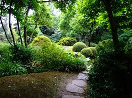

Místo odpočinku, poučení, zábavy a potěšení všech smyslů. Zahrada je rozsáhlá, rozkládá se na téměř 30 ha. Abyste se neztratili a návštěva byla pro vás co nejpříjemnější, stáhněte si mapu do mobilu z odkazu, či vytiskněte sebou. K dostání je také zdarma na pokladnách v kalendáři akcí.
